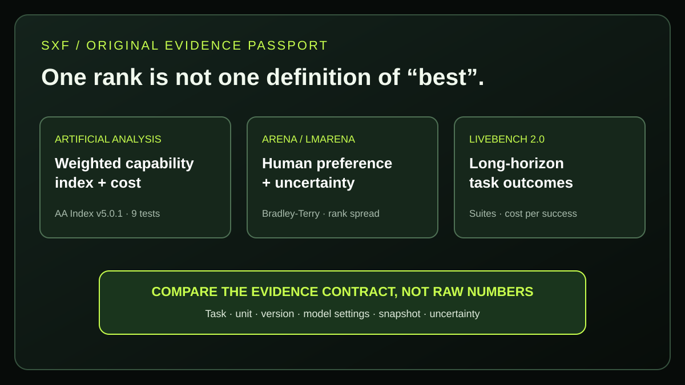

SXF / AI · METHODOLOGY INTELLIGENCE · REPRODUCIBLE RESEARCH
AI Leaderboards Compared (2026): Artificial Analysis vs LMArena vs LiveBench
Which AI model ranking should you trust when GPT, Claude and Gemini appear in different positions? This independent guide examines what each leaderboard actually measures, why Artificial Analysis Index v5 is not v4.3, and how to avoid false claims. Includes SXF's original, auditable benchmark-evidence lab.
DIRECT ANSWER
Which AI leaderboard should you trust in 2026?
Use Artificial Analysis for a documented composite AI capability score alongside speed and cost; Arena (formerly LMArena) for human preference under a specific category and confidence interval; and LiveBench 2.0 for evaluated long-horizon task outcomes and cost per successful task. No one leaderboard answers all three questions. An Arena Bradley–Terry rating is not a percentage correct, and an Artificial Analysis Intelligence Index score is not a LiveBench overall success rate.
Evidence note: source methods were checked November 13, 2026. Live model placements update frequently; this page does not freeze or invent a combined ranking. Benchmark providers have different sampling, tasks and commercial relationships; inspect the underlying methods before buying a model.
01 · PLATFORM COMPARISON
Artificial Analysis vs LMArena vs LiveBench: what are the differences?
Artificial Analysis asks how models perform across a specified, weighted capability suite; Arena asks which outputs people prefer (with category-specific variants); LiveBench 2.0 asks whether models and agents complete challenging deliverables under the benchmark's defined tasks. They are not rival measurements of one invisible, universal number.
| Leaderboard | How it measures | Interpretation | Best use | Important limit |
|---|---|---|---|---|
| Artificial Analysis | Weighted composite of nine evaluations in Index v5.0.1 | Normalized composite score plus separate price, speed and per-task economics | General capability shortlist, cost-quality tradeoffs | Weights reflect one evaluation design, primarily English text |
| Arena (LMArena) | Blind head-to-head human preferences on Text and other standard arenas | Bradley–Terry-derived score, confidence interval, rank spread | User-perceived response quality, categories, expert and factuality filters | Preference is not automatically task success or factual truth |
| LiveBench 2.0 | Structured long-horizon work with defined suite outcome checks | Task/suite performance; time and cost per successful task where shown | Agentic coding, browser, research, analysis and deliverables | Suites, tool setup and model availability differ from the other boards |

02 · SEARCH INTENT TO EVIDENCE
Which AI leaderboard is best for coding, reasoning, ChatGPT comparisons or API costs?
Match the leaderboard's evaluation population to your decision. Arena Text preference can guide interactive writing choices; Artificial Analysis's coding and knowledge-work components provide different evidence; LiveBench's coding/agentic suites add task completion and cost-per-success dimensions. None substitutes for testing your own deployment.
| Search question | Evidence to inspect | Missing check |
|---|---|---|
| Best AI model for coding agents? | AA v5 FrontierCode 2.0 / Terminal-Bench 4.0; LiveBench 2.0 Coding | Your repository's tests and real PR acceptance |
| Which chatbot answer do users prefer? | Arena Text category and rank spread | Objective factuality and your audience's specific prompts |
| Best AI model for research reports? | AA-Briefcase; LiveBench 2.0 Research/Design | Source fidelity, editability and review labor |
| Most cost-effective AI API? | AA Intelligence vs Cost per Task and API pricing | Latency, prompt length and your request volume |
| Best multimodal or multilingual model? | Specific vision/speech/multilingual suites, not only AA composite or Arena Text | Languages, media inputs and failures on your own dataset |
Use SXF's 7-step AI model selection guide for building a deployment shortlist, and SXF Model Pricing for a separate baseline-cost lens.
03 · ARTIFICIAL ANALYSIS
What is the Artificial Analysis Intelligence Index v5.0.1 in November 2026?
The Artificial Analysis Intelligence Index v5.0.1 is a weighted composite of nine evaluations divided into four equally weighted areas: Knowledge Work 25%, Coding 25%, Science 25%, and General 25%. It is not a percentage of general intelligence. The provider also reports model speed, price and cost per defined index task separately.
| Category | Evaluation | Weight |
|---|---|---|
| Knowledge Work | AA-Briefcase v1.1 | 15% |
| AutomationBench-AA | 5% | |
| GDP.pdf | 5% | |
| Coding | FrontierCode 2.0 | 15% |
| Terminal-Bench 4.0 | 10% | |
| Science | Terminal-Bench-Science 0.1.0 | 15% |
| CritPt v2 hard subset | 10% | |
| General | AA-Omniscience v1.1 | 15% |
| HLE-Diamond | 10% |
The methodology describes its scope as primarily English and text based, with some image inputs in included tests. In the October v5 launch note, Artificial Analysis said 60% of the index weight uses private data or held-out answers. This mitigates some memorization risks but does not establish a universal, independently reproducible accuracy measure. Official current methodology ↗.
Why is an Artificial Analysis Intelligence Index score not the same as an AA benchmark score?
“AA benchmark” is an umbrella search term, not a single metric. AA-Briefcase has its own combined Elo; other evaluations may report task success rates, and the Index normalizes their outcomes into a composite. A 58 index value does not mean the model correctly answered 58% of all possible user prompts. For the underlying specific tests, see SXF's AA benchmark guide and versioned evaluation evidence.
04 · HUMAN PREFERENCE
How does the LMArena leaderboard (now Arena) rank AI models?
Arena's standard head-to-head leaderboards use votes on anonymous model responses and estimate relative preference with a Bradley–Terry statistical model. Arena publishes scores with uncertainty, and its rank spread gives a range of plausible ranks based on overlapping confidence intervals. “#1” in a raw-rank column does not necessarily mean a statistically decisive lead.
Two responses to the same prompt are compared while model identities are hidden. The operator aggregates votes, applies category filters and estimates relative strengths. Arena's documentation distinguishes Text and other arena types, and certain specialized surfaces—including Agent Mode—use different signals. Be explicit about which Arena ranking you mean. Arena FAQ ↗ · Agent Mode ↗.
What is the difference between Arena Elo, confidence intervals and rank spread?
An Arena score is an Elo-like scale derived from pairwise preference probabilities; it is not an absolute count of correct facts. Confidence intervals express uncertainty in the estimate. Rank spread translates that uncertainty into best-to-worst plausible ordinal positions. If intervals overlap, avoid writing “model A conclusively beats model B” just because one raw rank is smaller. Arena ranking method ↗.
Does Arena measure facts or just what people prefer?
A standard preference ranking is not a pure factuality test. Arena also documents a separate factuality-oriented leaderboard or filter that uses correctness judgments. The distinction matters for legal research, retrieval, medicine, financial reporting and tasks where a persuasive false answer is worse than a less fluent correct one. Arena factuality methodology ↗.
05 · TASK OUTCOMES
What does LiveBench 2.0 measure in 2026?
LiveBench 2.0, whose current site identifies a November 6, 2026 release, emphasizes challenging, long-horizon AI work: coding, agentic execution, browser use, data analysis, research, reasoning and design. Its public leaderboard reports task/suite outcomes and, for listed models, cost per successful task and task duration. These are different from an Arena human-vote rating.
LiveBench's historic original benchmark used newer and objectively gradeable questions to resist contamination; the version 2.0 site presents a different, longer-horizon task suite with deliverable checking. Do not concatenate 1.0 and 2.0 scores into one unchanged test or call the new overall score a direct Elo. The observed site design, coverage and release time are from LiveBench 2.0 ↗; historical background is available from the original code/research ↗.
What can LiveBench cost per successful task tell you?
It relates benchmarked spending to successful outcomes under that suite's own test conditions. It cannot automatically predict your production bill. Real cost depends on token mix, retries, tool calls, latency, rate limits and acceptance thresholds. If a model succeeds at complex coding tasks but struggles with your internal dependencies, validate with your own isolated task fixtures before committing to an API.
06 · VERIFIED 2026 RESEARCH
What changed between Artificial Analysis Index v4.3 and v5—and why does it matter?
SXF's source-based version audit finds a structural break: Artificial Analysis v4.3 used ten evaluations with category weights 30/20/30/20, while v5.0.1 uses nine evaluations with 25/25/25/25. The share of private or held-out evaluation weight increased from 45% to 60%. Cross-version scores cannot be treated as clean evidence that a model became more or less capable.
| Design element | v4.3 (Sep 7) | v5 / v5.0.1 (Oct 27 onward) | Interpretation |
|---|---|---|---|
| Number of evaluations | 10 | 9 | Not the same test mixture |
| Category weights | Agents 30%, Coding 20%, General 30%, Scientific 20% | Knowledge 25%, Coding 25%, Science 25%, General 25% | Priorities and category names shifted |
| Private/held-out weight | 45% | 60% | Different exposure to memorization risks |
| New evaluations | — | FrontierCode 2.0; Terminal-Bench-Science | New coding/science demands |
| Retired from Index | GDPval-AA v2.1; SciCode; AA-LCR v1.1 were included | Removed from v5 composite | Historical component results remain useful, but not directly in new Index |
| Upgraded components | Earlier HLE, AA-Omniscience and CritPt forms | HLE-Diamond, AA-Omniscience v1.1, CritPt v2 hard subset | Even similarly named tests can change |
SXF-specific context: our existing AA Intelligence Index v4.3.2 evidence page is a historical version, not the live November 2026 composite. The AA benchmark explainer preserves details of that older evaluation mixture. This new guide separates archived evidence from current provider methodology. Download the version-audit JSON ↗.
07 · WHY LEADERBOARDS DISAGREE
Why are ChatGPT, Claude and Gemini ranked differently on AI leaderboards?
Because rankings answer different questions and may test different versions of ostensibly the same model. Human preference, code-agent success, research deliverable acceptance and a weighted composite are different target variables. Model revisions, reasoning effort, runtime settings, task populations, statistical uncertainty and evaluation snapshots can all change the ordering.
Task population
A coding model may excel on repository tasks while losing preference votes for casual conversation. Neither board is necessarily wrong.
Harness and model variant
Agent tools, prompt scaffolding, model revision, reasoning effort and sampling settings are part of what was measured.
Statistical and version uncertainty
Arena exposes confidence intervals; Artificial Analysis and LiveBench version transitions alter their measured surfaces.
Do not publish a home-made overall ranking by taking an arithmetic average of Artificial Analysis index points, Arena ratings and LiveBench percentages. Normalizing numbers onto 0–100 does not make the underlying questions, data or uncertainty compatible. To compare models responsibly, freeze a date, align the model IDs and analyze each source separately before running an independent workload test.
08 · SCORE TRANSLATION
Can you compare Artificial Analysis scores, LMArena Elo and LiveBench rankings directly?
No. Artificial Analysis Intelligence Index values, Arena Bradley–Terry scores and LiveBench 2.0 task/suite results use different units and evaluation designs. Converting them to a shared numerical range without a validated statistical model creates false precision. Compare conclusions with task context, not raw score magnitudes.
| Visible number | Appropriate reading | Incorrect inference |
|---|---|---|
| AA Intelligence Index value | Normalized composite under a specified Index version | Percent correct on all questions |
| Arena Elo-like rating | Relative human preference in its arena, with uncertainty | Absolute intelligence or universal factual accuracy |
| Arena raw rank | Ordinal position in that snapshot | Decisive superiority if rank spreads overlap |
| LiveBench 2.0 overall/suite result | Measured task/suite outcome under that test setup | Same thing as AA index or guaranteed company task success |
| Cost per successful task | Cost under benchmark setup and acceptance rules | Guaranteed cost of your app's accepted result |
09 · ORIGINAL SXF FIELD RESEARCH
SXF AI Leaderboard Claim Audit: can you spot misleading benchmark comparisons?
SXF authored 12 synthetic, fully published benchmark interpretation claims and applied a transparent measurement-compatibility checklist. Nine were deliberately designed to fail and three are conditionally comparable. These 9/12 and 3/12 counts describe the constructed examples only—not an observed industry error rate, a model accuracy study, or a measurement of leaderboard reliability.
SXF REPRODUCIBLE CLAIM-AUDIT FIXTURES
Explore one disputed benchmark claim
Every example has a failure class, reason and safer interpretation. The data and reproduction script are downloadable. No API or real-user information is collected.
Index points vs Elo
“An Artificial Analysis score of 60 is worse than an Arena rating of 1,550 because 1,550 is larger.”
REJECT · different-unit
Index points and Bradley–Terry ratings have different scales, populations and meanings.
Safer reading: Treat these as separate evidence signals; never subtract or divide them.
Cases are illustrative, with fictional comparisons and numbers; they are not records of mistakes made by real named vendors or current model scores. The status “conditionally comparable” still requires a real task-fit check.
What is the SXF Evidence Passport for AI benchmark claims?
Before accepting a comparison, record (1) measured construct and score unit, (2) task suite and benchmark version, (3) exact model ID/effort/tool harness, (4) snapshot and confidence or uncertainty, (5) whether the conclusion is within scope, and (6) task-specific cost and latency where procurement matters. SXF's downloadable cases identify one violation at a time so reviewers can learn the failure modes without conflating unlike scales.
How can another research team reproduce the SXF findings?
Run the downloadable Python audit ↗ against the claim fixture CSV ↗. The script validates every ID and permitted failure classification, checks there are twelve declared cases and reports the same nine intentionally rejected and three conditionally comparable examples. The method and limitations ↗ are public. These are deterministic logic fixtures, not live model inference experiments.
10 · 2026 MODEL SELECTION
How should you choose an AI model using Artificial Analysis, Arena and LiveBench?
Use the three boards as complementary filters rather than a winner-take-all election. Shortlist on task-relevant evidence, verify the exact model configuration and then run 20–50 representative application tasks with acceptance criteria, cost and latency tracking. Select the model that meets your constraints on those tasks—not the model with the largest mixed leaderboard number.
- Write the decision problem. Example: “20-slide reports with cited facts, under two minutes, under a specified budget.”
- Identify the benchmark population. Check whether coding, research, factual retrieval or conversational preference matches the job.
- Freeze methodology. Record AA v5.0.1, Arena Text/Agent/factuality filter or LiveBench 2.0 suite and report date.
- Match the configuration. Exact model version, reasoning effort, tools, token caps and provider route.
- Read uncertainty honestly. Arena score gaps with overlapping intervals are not conclusive; keep source-specific units intact.
- Add cost and operational acceptance. Budget full task cost, TTFT/latency, retry rates, tool permissions, citations and user review.
- Run your own reference set. Save prompts, outputs, judgments and human-verified outcomes. Retest after an API or benchmark version change.
The SXF agent testing platform comparison covers how to run regression and tool-call evaluation, while the model selection worksheet covers procurement criteria and cost-quality-speed tradeoffs.
11 · COMMON SEARCH QUESTIONS
AI model leaderboard FAQ: direct answers
What is the best AI model leaderboard in 2026?
There is no single best board for all questions. Artificial Analysis is useful for documented weighted capabilities and model economics, Arena for public human-preference feedback, and LiveBench 2.0 for structured long-horizon tasks. Match the benchmark scope to your workload.
What does “AA benchmark” mean?
Here AA means Artificial Analysis. Its benchmark products include individual tests with their own metrics as well as the multi-evaluation Intelligence Index. A specific AA-Briefcase Elo rating is not directly interchangeable with an Intelligence Index score.
Is Artificial Analysis more accurate than LMArena?
That question needs a target outcome. Artificial Analysis and Arena evaluate different constructs—defined task results versus human comparisons—so a universal accuracy comparison is not well posed. Choose a task-specific validation set to judge which evidence predicts your application outcomes.
Does a high LMArena score mean the model is factually correct?
Not necessarily. Arena preference ratings summarize votes about outputs, and its factuality-focused analyses address correctness more directly. Check confidence intervals and the selected category.
Why did Artificial Analysis move from v4.3 to v5?
Artificial Analysis introduced new code and science tests, upgraded existing evaluations and changed category weights. The October 27, 2026 announcement reports 60% private or held-out test weight in v5, compared with 45% in v4.3. The two composites should not be treated as an unchanged time series.
What is LiveBench 2.0?
The November 2026 LiveBench 2.0 version evaluates challenging, longer-horizon agentic work across suites such as coding, research, browser use, data analysis, reasoning and design. It is different from the original LiveBench 1.0 evaluation surface.
Can I combine Artificial Analysis, Arena and LiveBench into one AI model score?
Only with an explicit, externally validated model that addresses metric meaning, task coverage, missing values, version matching and uncertainty. A naive average of normalized scores is not a defensible universal intelligence measure. This SXF guide deliberately does not create one.
Which benchmark should I use for Claude vs GPT vs Gemini?
Check the latest exact revisions and efforts on all three where available. Use AA for broader capability/economics, Arena for interaction preference and LiveBench for task outcomes, then compare them in a private workload evaluation. Never infer a single global winner from different scoring units.
12 · PRIMARY SOURCES AND EDITORIAL METHOD
How did SXF research the AI leaderboard comparison?
SXF reviewed the platforms' own published methodologies and version announcements as of , compared the documented AA Index 4.3-to-5 transition, and created twelve original interpretation fixtures. We did not run the models, collect Arena ballots, access hidden benchmark tasks or measure provider performance. All numerical demonstrations in the SXF claim lab are intentionally synthetic.
Search intent was informed by the owner's Google Search Console export, including the query aa benchmark with 262 reported impressions in the exported window. That is an observed query impression count, not a monthly keyword-volume estimate or promise of organic clicks. The existing SXF AA explainer is about individual Artificial Analysis benchmark definitions; this separate article is about choosing among evaluation services, which avoids deliberately copying the earlier guide.
Official sources reviewed
- Artificial Analysis Intelligence Index v5.0.1 official methodology ↗
- Artificial Analysis Intelligence Index v5 announcement (October 27, 2026) ↗
- Artificial Analysis v4.3 methodology announcement (September 7, 2026) ↗
- Artificial Analysis current model evaluations and cost ↗
- Arena official Bradley–Terry FAQ ↗
- Arena rank spread and confidence interval documentation ↗
- Arena published leaderboard policy ↗
- Arena factuality benchmark method ↗
- Arena help: human preferences, ranks and filters ↗
- Arena Agent Mode methodology difference ↗
- LiveBench 2.0 leaderboard and methodology links ↗
- Original LiveBench paper and 1.0 codebase ↗
- Google Search Central Article structured data guide ↗
Sources are credited to their originating providers. Links are editorial, not sponsored or affiliate. Model rankings and benchmark versions can change after publication. SXF does not assert measured leaderboards as its own results. SXF methodology ↗.